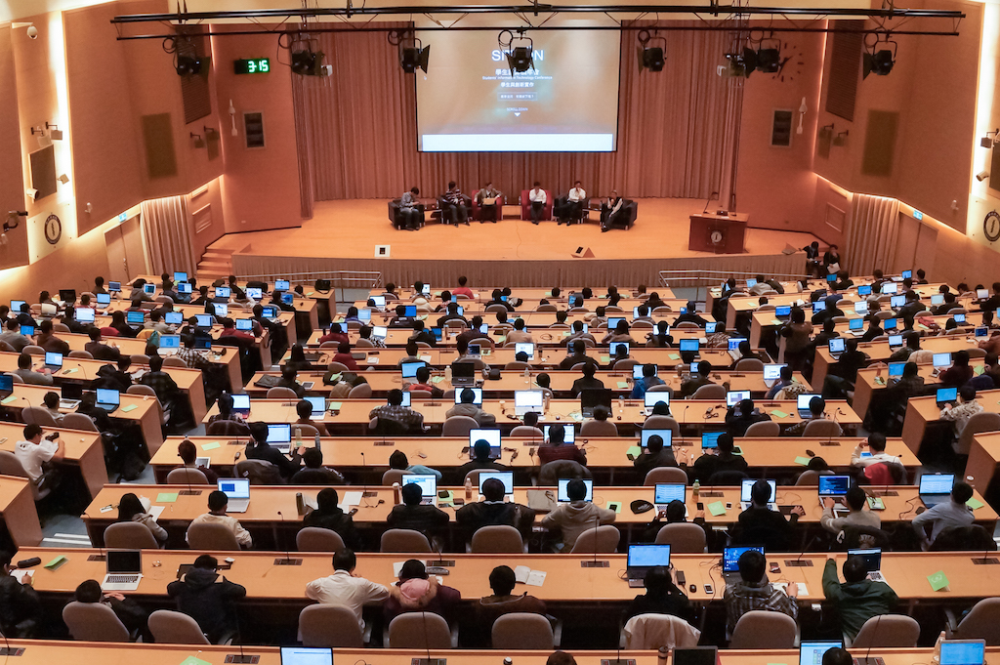

Open Data 是資訊界致力推動的一環，這樣的風氣近年來更影響著政府與社會的各個角落。然而在人才的搖籃中，校園資訊開放的現況又是如何呢？另外，需要設計各種資訊系統的時候，廠商總是提出不合時宜的方案，你是否曾想過這些工作可能可以「By students, for students」？下午的座談會，將由 Richard Lin 主持，與黃育綸教授、張業永先生及 Denny Huang，一同聊聊「學生參與校務系統開發」與「校園 Open Data、Open API」的各種問題。

議程內容
翔子 - 嗡嗡嗡~跟著小蜜蜂去旅行
網路社群愈趨興盛，使用地理位置配對的通訊服務也跟著盛行。但你有沒有想過，在使用這些看似便捷、有趣的功能時，其實正洩漏了自己敏感的隱私資料而不自知？講者將舉知名行動通訊 App 為例，探討因設計缺陷而引發的安全性問題，同時呼籲開發者注意 Security、Ease of Use、Functionality 之間的平衡。
臺灣與香港短短一小時航程的距離，跨越了國境，又會是怎麼樣的生態圈？也許你知道什麼是開源，也許你清楚每一年在臺灣有多少開源年會，但是你知道香港的開源領域發生什麼事嗎？快來聽 Tony Yip 的分享，了解香港的社群朋友們在推廣開源時，面對的各式困境與阻礙；看看與我們生活相近卻又迴異的香港夥伴們，如何突破種種限制，努力在香港推廣開源理念。